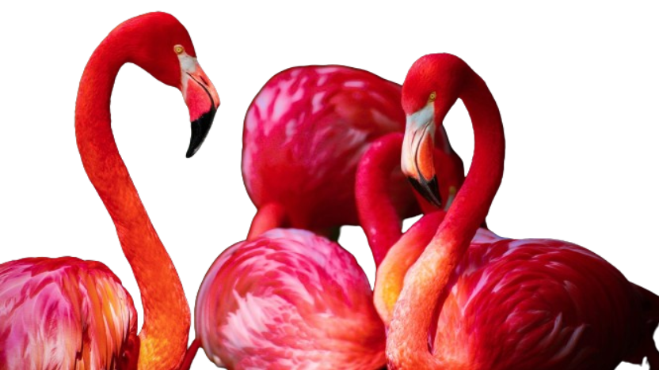
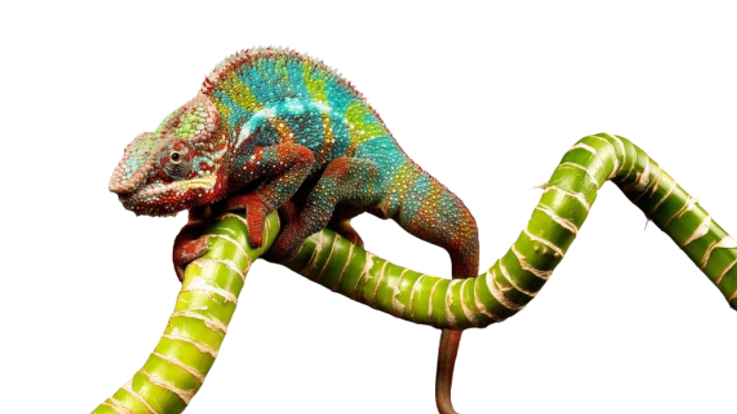
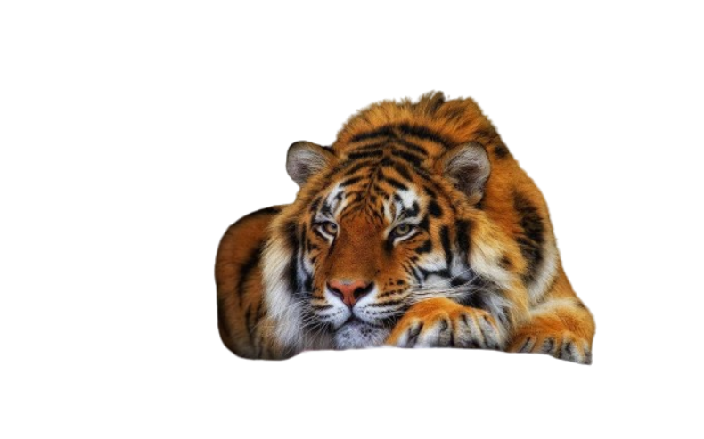
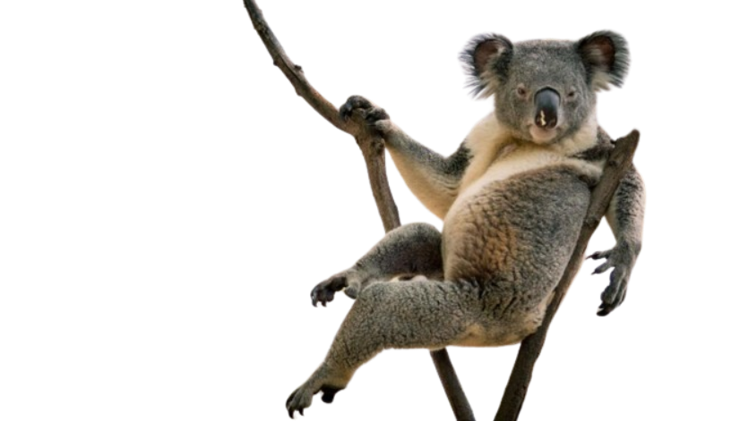

Red Fox

The red fox (Vulpes vulpes) is a small, omnivorous mammal found across the Northern Hemisphere. Known for its reddish fur, bushy tail, and sharp, intelligent eyes, the red fox is highly adaptable, thriving in diverse habitats from forests to urban areas. Read More>
flamingo
Wildlife Nature
Flamingos are large, pink wading birds belonging to the family Phoenicopteridae, found in both the Western and Eastern Hemispheres. They are known for their long legs, curved necks, and distinctive pink coloration, which comes from the carotenoid pigments in their diet. Flamingos are social birds, often seen in large colonies, feeding on algae, small crustaceans, and plankton. Read More
Flamingos are large, pink wading birds belonging to the family Phoenicopteridae, found in both the Western and Eastern Hemispheres. They are known for their long legs, curved necks, and distinctive pink coloration. Read More>
Chameleon
Wildlife Nature
Chameleons are a distinctive and specialized clade of Old World lizards, with approximately 202 species. They are known for their ability to change color, elongated tongues, and independently mobile eyes. Chameleons are primarily insectivorous, using their long, sticky tongues to catch prey, and are found in various habitats, from rainforests to deserts. Read More
Chameleons are a distinctive and specialized clade of Old World lizards, with approximately 202 species. They are known for their ability to change color, elongated tongues, and independently mobile eyes. Chameleons are primarily insectivorous, using their long, sticky tongues to catch prey, and are found in various habitats, from rainforests to deserts. Read More>
Tiger
Wildlife Nature
The tiger (Panthera tigris) is the largest cat species, native to Asia, recognized for its striking orange coat with black stripes. Tigers are apex predators, primarily hunting large ungulates in dense forests and grasslands. Each tiger has a unique stripe pattern, which helps in camouflage and identification. Read More
The tiger (Panthera tigris) is the largest cat species, native to Asia, recognized for its striking orange coat with black stripes. Tigers are apex predators, primarily hunting large ungulates in dense forests and grasslands. Each tiger has a unique stripe pattern, which helps in camouflage and identification. Read More>
Koala
Wildlife Nature
Koalas (Phascolarctos cinereus) are arboreal marsupials native to Australia, known for their teddy bear-like appearance and calm demeanor. They have thick, gray fur, large ears, and a distinctive nose. Koalas primarily feed on eucalyptus leaves, spending most of their time in trees and sleeping up to 18 hours a day due to their low-energy diet. Read More
Koalas (Phascolarctos cinereus) are arboreal marsupials native to Australia, known for their teddy bear-like appearance and calm demeanor. They have thick, gray fur, large ears, and a distinctive nose. Koalas primarily feed on eucalyptus leaves, spending most of their time in trees and sleeping up to 18 hours a day due to their low-energy diet. Read More>
Prev
Next